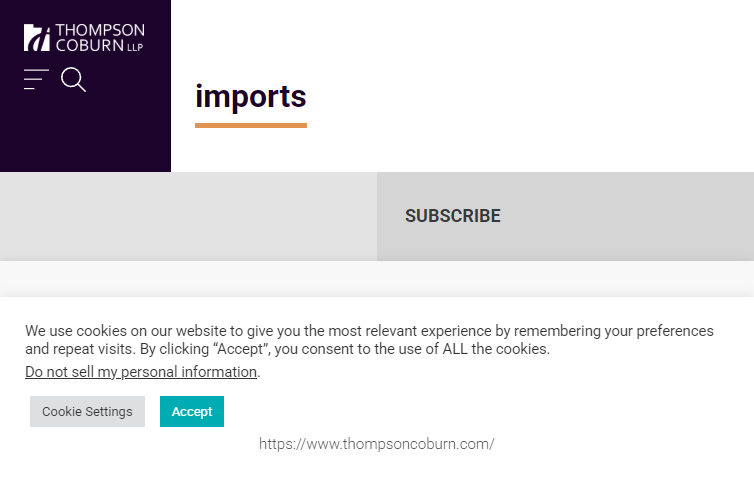
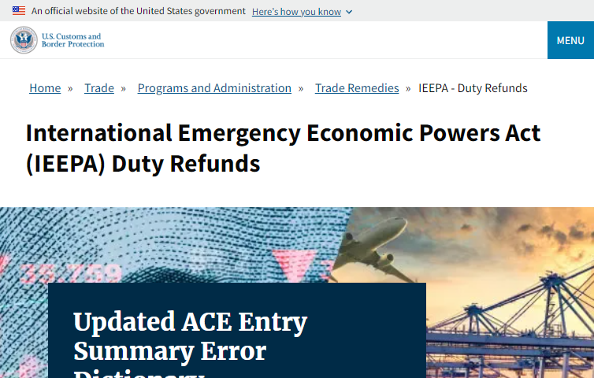
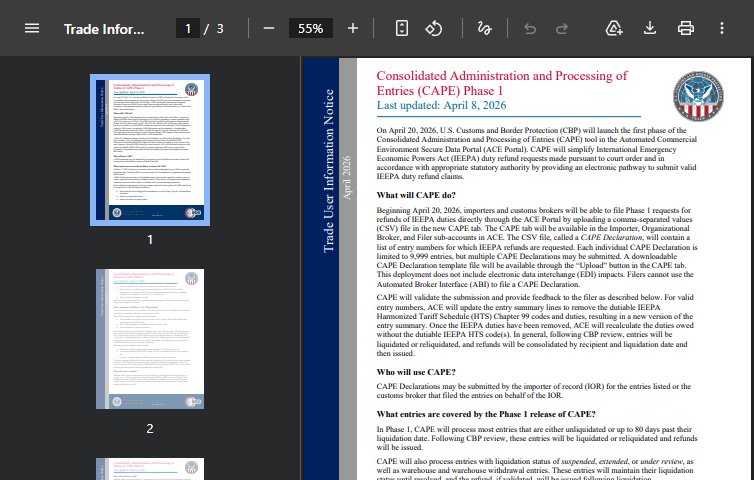
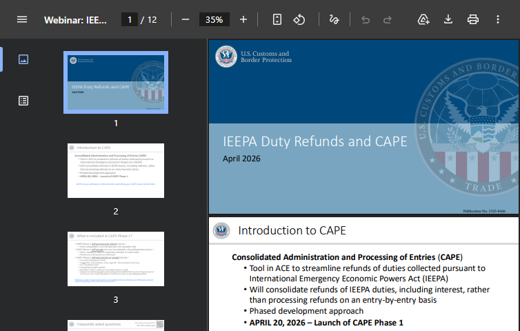

Step-by-step guide to filing your IEEPA tariff refund claim through CBP's Consolidated Administration and Processing of Entries system.
CAPE (Consolidated Administration and Processing of Entries) is a new functionality within CBP's Automated Commercial Environment (ACE) designed to streamline the submission and processing of IEEPA duty refund requests. Rather than processing refunds entry-by-entry (which CBP estimated would require 4.4 million working hours), CAPE consolidates refunds by IOR number and liquidation date.

Thompson Coburn LLP Trade Alert: CAPE IEEPA Refund System Updates — April 10, 2026

CBP.gov: Official IEEPA Duty Refunds page - the central resource for all refund information from U.S. Customs and Border Protection.

CBP CAPE Notice (PDF): Official notice from CBP explaining the CAPE system launch and what importers need to know.

CBP IEEPA Refunds Webinar Slides (PDF): Official CBP presentation explaining the CAPE system, eligibility criteria, and filing process.
CBP uses intentionally confusing terminology. Here's the full story of what actually happens to your shipment — from the factory in China to the day CBP finally closes your file.
You ordered $500,000 worth of electronics from a factory in Shenzhen, China. The goods were loaded into a 40-foot container, put on a cargo ship, and sailed across the Pacific Ocean to the Port of Long Beach, California. CBP charged you a 40% IEEPA tariff — that's $200,000 in extra duties you paid. You want that money back. Here's exactly what happened, step by step.
Visual timeline: Your container ships in January, arrives in February, clears customs in days, then sits for ~10 months while CBP's computer waits. Liquidation happens automatically around month 10. The 180-day protest clock starts then.
Liquidation is the date CBP's computer automatically finalizes your import entry — typically about 10 months after your goods arrived — and it's the date that starts your 180-day deadline to claim a refund.
When: Within hours to days of arrival
What happens: CBP checks your paperwork, decides your goods are safe to enter, and releases the container. Your truck picks it up and drives to your warehouse.
Does this mean you're liquidated? NO. This is just CBP letting your goods into the country. Your entry is still open.
When: ~10 months later (up to 314 days by law)
What happens: CBP's computer automatically closes your file. You get a Notice of Liquidation in the mail. Your entry is now "final."
Why so long? CBP uses this time to audit entries, check for fraud, verify classifications, and catch errors. Most entries are never actually audited — they just auto-liquidate when the timer runs out.
Log into your ACE Portal and run the ES-701 or ES-702 report. Look for the "Liquidation Date" column. If you don't have ACE Portal access yet, ask your customs broker to pull this report for you. This is the single most important piece of information for your refund claim.
It means CBP hasn't finalized your entry yet. The file is still open. This is GOOD for you. Unliquidated entries are automatically covered by CAPE Phase 1 with no deadline pressure. You don't need to file a protest for unliquidated entries.
No. "Liquidation" in customs has nothing to do with bankruptcy, going out of business, or selling assets. It's purely a CBP administrative term for finalizing an import entry. CBP chose this confusing word decades ago on purpose.
No. Paying the tariff is just paying the tariff. Liquidation is a separate event that happens ~10 months later, when CBP formally closes your entry. Many importers paid IEEPA tariffs in February, March, or April 2026, but their entries won't liquidate until late 2026 or early 2027. You need to check.
By law, CBP has 314 days to review every import entry. For most entries, nothing happens during this time — it's just a waiting period. Liquidation is triggered automatically by CBP's computer when the 314-day window is about to expire. CBP uses this time to spot-check entries for fraud, misclassification, or duty errors. The vast majority of entries are never manually reviewed; they just auto-liquidate.
The answer depends on your liquidation date — which is typically ~10 months AFTER your goods arrived. Here's every scenario explained with real dates.
You imported goods from China that arrived at Long Beach in April 2025. You paid the 40% IEEPA tariff at that time. CBP liquidated the entry in February 2026 (10 months later). Today is April 2026. Where do you stand?
Liquidation date: February 2026
180-day protest deadline: August 2026
Today's date: April 2026
Result: You still have ~4 months to file a protest. But CAPE Phase 1 does NOT cover this entry because it liquidated more than 80 days ago.
If your entry hasn't been liquidated yet, you are in the best possible position. No deadline pressure. Unliquidated entries are automatically covered by CAPE Phase 1.
Real-world example: You imported goods in July 2025. CBP has not liquidated the entry yet (it's only been 9 months; CBP has up to 314 days). Your entry is still open.
Action: Set up your ACE Portal account, enroll in ACH, and file a CAPE Declaration when ready. You have plenty of time. Focus on getting your ACE account set up correctly.
How to check: Look at your ES-701 report. If there's no liquidation date listed, or the status says "unliquidated," "suspended," or "extended," you're in this category.
If your entry was liquidated in the last 80 days (approximately between January 30, 2026 and April 19, 2026), you are covered by CAPE Phase 1.
Real-world example: You imported goods in March 2025. CBP liquidated the entry in February 2026. That's within the last 80 days.
Action: File a CAPE Declaration IMMEDIATELY. Set up ACE Portal and ACH enrollment as fast as possible. Your entry is eligible, but the sooner you file, the sooner you get your refund.
How to check: Look at the "Liquidation Date" on your ES-701 report. If it's between Jan 30 and Apr 19, 2026, you're here.
This is the most dangerous scenario. Your entry was liquidated more than 80 days ago (before January 30, 2026), so it's NOT covered by CAPE Phase 1. But the 180-day protest window may still be open.
Real-world example: You imported goods in April 2025. CBP liquidated the entry in January 2026. That's more than 80 days ago, so CAPE Phase 1 won't cover it. But the 180-day protest deadline is July 2026 — so you still have time to file a protest.
Action (URGENT): Calculate your protest deadline immediately. If you're still within 180 days of liquidation, file a CBP Form 19 Protest right now to preserve your rights. Even if you plan to use CAPE later, filing a protest protects you.
Important: If you file a protest, that entry is EXCLUDED from CAPE Phase 1. But that's okay — a protest preserves your rights, and you can still get your refund through the protest process or CAPE Phase 2.
If your entry liquidated more than 180 days ago, the protest deadline has expired. Your entry is "finally liquidated." This is the hardest position to be in.
Real-world example: You imported goods in March 2024. CBP liquidated the entry in January 2025. The 180-day protest deadline was July 2025. That was 9 months ago. You missed the deadline.
Your Options:
Bottom line: For entries in this category, your best hope is CAPE Phase 2. The CIT's March 27 order technically covers these entries, but CBP hasn't built the system to process them yet.
It depends on when the entry was LIQUIDATED, not when you paid.
If you paid tariffs in April 2025 but the entry didn't liquidate until February 2026, your 180-day protest deadline is August 2026. You can still file a protest and get your refund.
If you paid tariffs in April 2024 and the entry liquidated in February 2025, your 180-day deadline was August 2025. That deadline is gone. Your only hope is CAPE Phase 2 or a lawsuit.
The only way to know for sure is to check your ES-701 report and find the liquidation date for each entry.
1. Call your customs broker TODAY. Ask them to pull your ES-701 report for all entries with IEEPA tariffs.
2. Find the "Liquidation Date" column. For each entry, write down the liquidation date.
3. Calculate the 180-day deadline. Add 180 days to each liquidation date. If any deadline is in the future, you need to file a protest BEFORE that date.
4. If the entry is unliquidated, relax — you're covered by CAPE Phase 1. Focus on setting up your ACE Portal.
5. If the 180-day deadline has already passed, your options are limited. Register with us and we'll track CAPE Phase 2 developments for you.
Under 19 U.S.C. § 1514(c)(3), importers have 180 days from the date of liquidation to file a protest. CBP has NOT confirmed whether filing a CAPE Declaration tolls (stops) this deadline.
Critical Risk: If you file a CAPE Declaration and it's rejected or delayed, and the 180-day protest window expires, you may lose your right to a refund entirely.
Recommendation: File a protest before the 180-day deadline to preserve your rights. Note: entries covered by an open protest are EXCLUDED from Phase 1 CAPE processing.
Under 19 U.S.C. § 1501, CBP has 90 days after liquidation to voluntarily reliquidate entries. Phase 1 was originally designed for entries within this window, but CBP narrowed it to 80 days to allow for processing time.
The CIT's March 27 order potentially covers finally liquidated entries, but CBP has not built Phase 2 functionality yet. Options: (1) Wait for Phase 2 (timeline unknown); (2) File action at the CIT under 28 U.S.C. § 1581(i); (3) File a summons and complaint in the CIT.
After filing your CAPE Declaration, use these ACE reports to track your refund status:
| Report | Description |
|---|---|
| REV-603 | Trade Refund Report — Shows successful refunds |
| REV-613 | ACH Rejected Refunds Report — Shows refunds rejected due to ACH enrollment issues |
| REV-615 | Trade CAPE Detail Refund Report — CAPE-specific consolidated information |
| ES-701/ES-702 | Entry Summary reports — Shows liquidation status of entries |
Our automated system handles the entire process: entry identification, CSV generation, CAPE filing, and refund tracking.
Get Started Now